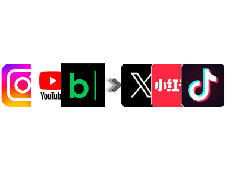
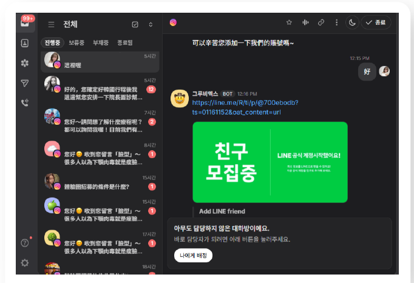
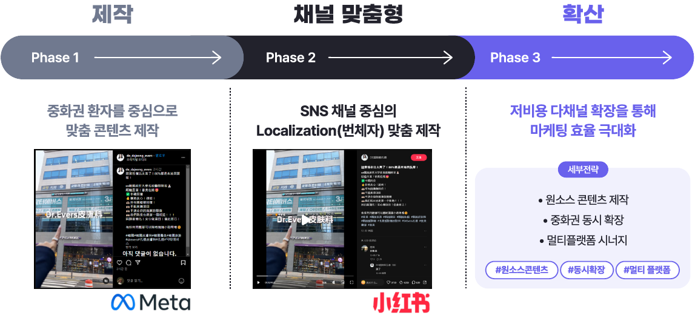
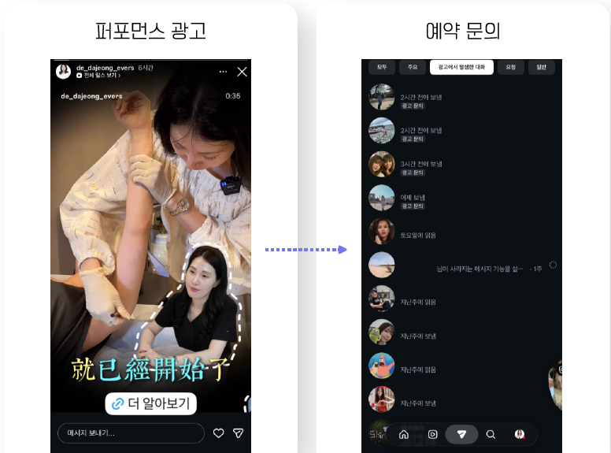
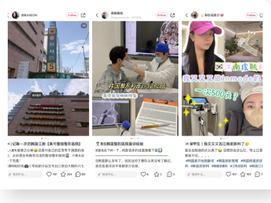
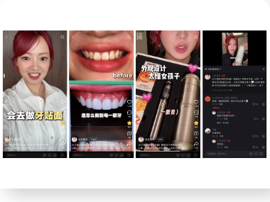
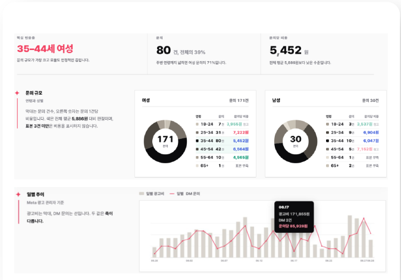
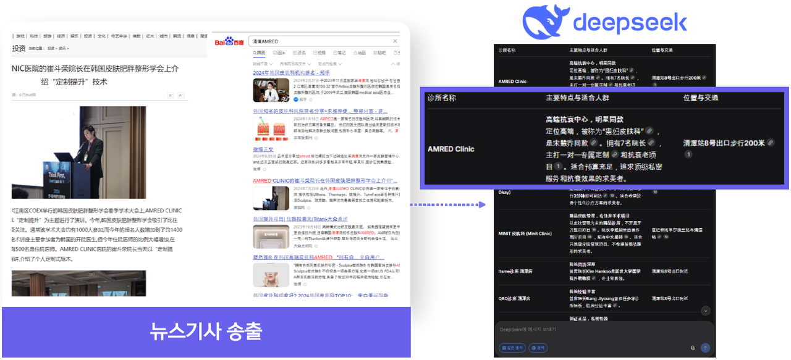
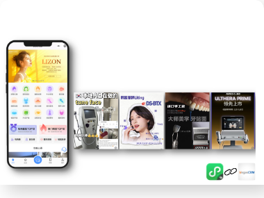
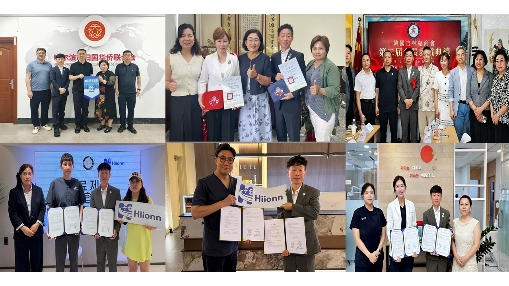

유치 운영, 인재 양성, AI 전환.
세 가지를 한 팀이 합니다
해외환자 유치 운영
공식 계정 위탁 운영, 현지 제휴, 모국어 상담과 예약 연결까지 전담합니다.
Hiionn Academy
해외환자 CS·코디네이터·의료 마케터를 현장 실무 중심으로 양성합니다.
병원 AX 컨설팅
상담실 반복 업무에 AI를 도입하고, 병원만의 상담 지식을 정리합니다.
병원마다 다른 상황에 맞춰,
아홉 가지 방법으로 환자를 연결합니다
병원마다 출발점이 다릅니다. 진료과·타깃 국가·예산에 맞춰 필요한 방법을 골라 조합합니다.

콘텐츠 운영 전략현지화 + 오리지널 제작
현지 플랫폼 트렌드와 이용자 습관에 맞춰 기획·촬영·제작합니다. 번역만 하지 않고 현지 사람이 공감하는 콘텐츠를 따로 만듭니다.

해외 CS 전담 창구주중·주말 응대
모국어 전담 상담사와 AI 1차 응대로 문의를 놓치지 않습니다. 시술은 신중하게 결정하는 만큼, 숙련된 상담으로 예약까지 이어갑니다.

멀티 채널 전략중화권 전체로 확장
간체·번체를 동시에 제작해 제작비를 줄이고, 중국·대만·홍콩까지 타깃을 넓힙니다.

퍼포먼스 광고광고 → 노출 → 문의 → 예약
광고 소재를 직접 만들고 효과를 검증해, 실제 환자에게 닿고 문의로 이어지는 광고를 운영합니다.

재한 유학생 체험단 + 코디네이터(마케터) 양성체험이 콘텐츠가 되고, 사람이 남습니다
한국에 사는 외국인 유학생이 병원을 직접 체험하고 모국어로 경험을 전합니다. 참여한 유학생은 Hiionn 아카데미에서 해외환자 코디네이터·의료 마케터로 성장해 병원 현장의 인재가 됩니다.
아카데미 보기 →
인플루언서(KOL) 협업현지 인지도 확보
팔로워가 병원의 타깃 환자와 맞는 현지 인플루언서·KOL을 찾아 병원과 연결합니다.

광고 성과 관리실시간 확인·개선
전담팀이 광고 운영을 맡아 병원 인력 추가 없이 캠페인을 운영합니다. 성과는 계속 추적하고 리포트로 공유합니다.

AI 검색(GEO) 대응AI 답변에 병원이 보이도록
AI가 병원을 직접 추천하는 시대에 대비해, 정확하고 믿을 수 있는 병원 정보를 꾸준히 쌓습니다.

실시간 예약 + 기록 연동위챗 미니프로그램
환자가 위챗 안에서 시술 정보·가격을 확인하고 바로 예약합니다. 예약과 상담 기록은 병원 자산으로 남습니다.
※ 체험단·인플루언서 콘텐츠는 협찬 사실을 표시하고, 의료광고 심의 기준을 지켜 제작합니다.
해외 공식 계정을 맡기고,
진료에 집중하세요
중국·대만·베트남 등 타깃 국가별로 현지 정서에 맞는 콘텐츠를 만들고, 현지 전문가(KOL) 협업으로 신뢰를 쌓습니다. 콘텐츠에서 생긴 문의는 전담 창구가 응대해 예약으로 연결합니다.
- 1공식 계정 구축·위탁주요 해외 플랫폼에 병원 공식 계정을 세웁니다.
- 2현지화 콘텐츠·KOL 협업의료진의 전문성을 현지 언어와 감성으로 전달합니다.
- 3검색 최적화꾸준한 업로드와 현지 키워드 관리로 노출을 유지합니다.
- 4문의 응대 → 예약 연결유입된 문의를 모국어로 상담해 병원 예약으로 넘깁니다.


광고가 닿지 않는 곳까지,
현지 네트워크로 엽니다
온라인 광고만으로는 만나기 어려운 환자가 있습니다. 현지 협회·단체·에이전트와의 제휴로 신뢰를 바탕에 둔 소개 경로를 만들고, 통역·방문 안내까지 함께 설계합니다.
- 1현지 협회·단체 제휴신뢰 기반의 현지 조직과 협력 체계를 구축합니다.
- 2회원·지역사회 안내단체 회원에게 병원을 소개하고 모객합니다.
- 3통역·방문 편의상담·통역·방문 안내로 환자의 불안을 줄입니다.
- 4문의 응대 → 예약 연결Hiionn 전담 창구가 응대해 예약으로 연결합니다.